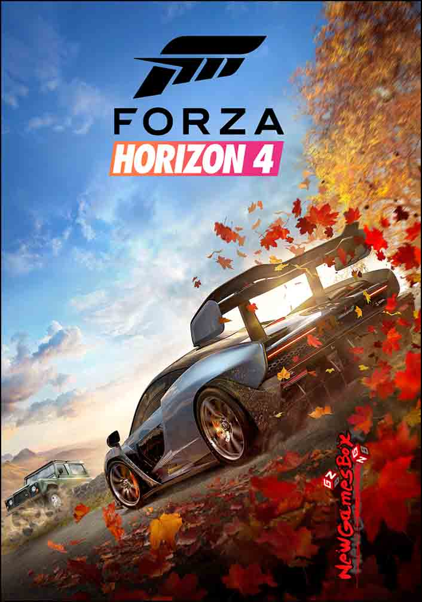

FORZA HORIZON 4
FORZA HORIZON 4 PC Game Overview
Forza Horizon 4 PC Game is an open world racing video game. Developed by Playground Games and published by Microsoft Studios. Players have the opportunity to buy properties from across the map, which unlock new items and gameplay perks. The game features a dynamic weather system that also depicts the change of season. The game will be in a fictionalised representation of the United Kingdom. It is the fourth Forza Horizon title and eleventh instalment in the Forza series.
Forza Horizon 4 features over 450 licensed cars. It includes a route creator which enables players to create their own races. The game world changes depending on the season: for example, lakes will freeze over in winter. And allow players the ability to explore regions of the game world that would be inaccessible during other seasons. The game takes place in a synchronised shared world, compared to the AI-driven Drivatars from its predecessors. With each server supporting up to 72 players. The game is also playable in offline mode.
System Requirements of FORZA HORIZON 4
Before You Start FORZA HORIZON 4 Download Free. Make Sure Your PC Meets Minimum System Requirements.
Minimum System Requirements
OS: Windows 10 (64-Bit)
RAM: 8 GB
Video Memory: 2 GB
Video Card: NVIDIA GeForce GTX 760 or AMD Radeon R7 260X
Sound Card: DirectX Compatible
DirectX: 12
Hard Drive: 100 GB free
Processor: INTEL Core i5
Recommended System Requirements
OS: Windows 10 (64-Bit)
Processor: INTEL Core i7
RAM: 16 GB
Video Memory: 4 GB
Video Card: NVIDIA GeForce GTX 980 Ti or AMD Radeon R9 FURY X
Sound Card: DirectX Compatible
DirectX: 12
Hard Drive: 100 GB free
FORZA HORIZON 4 Free Download
Click On The Below Button To Start FORZA HORIZON 4 Free Download. It Is Full And Complete Game. Just Download And Start Playing It.
We Have Provided Direct Link Full Setup Of The Game.